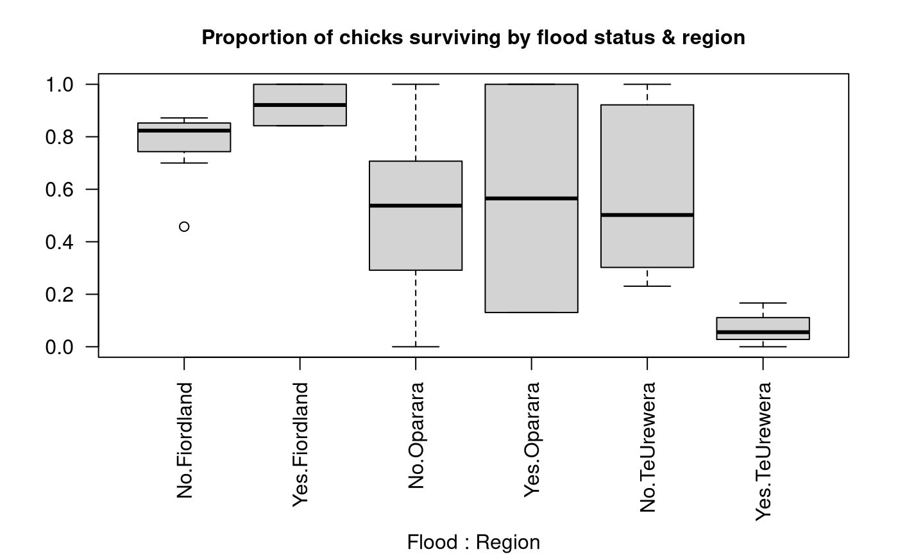
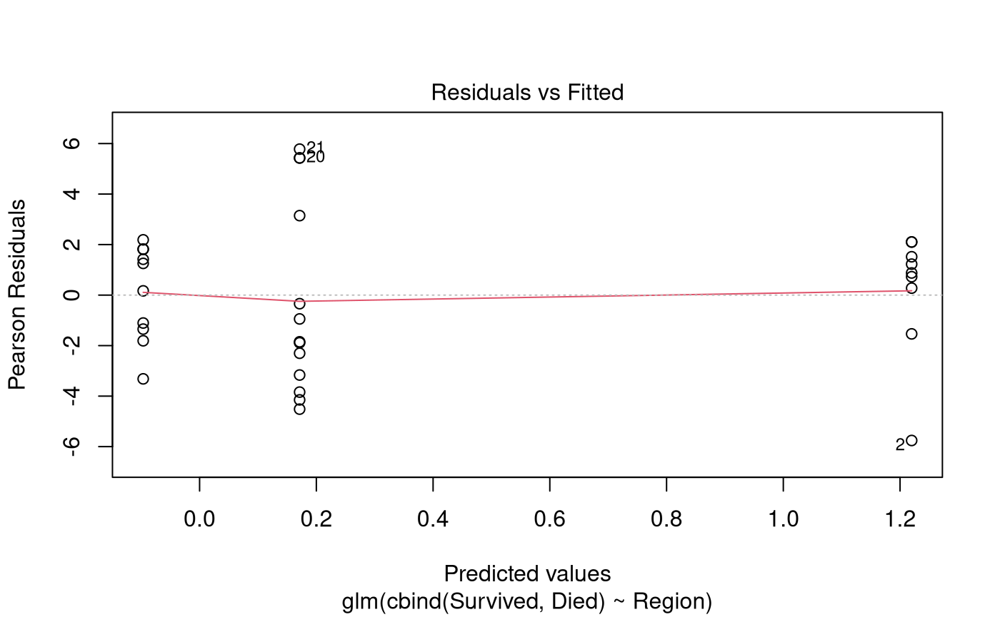

Problem
The whio, or blue duck, is an endangered bird that lives in fast-flowing rivers throughout NZ. Although it is a type of duck, it doesn’t quack but instead emits a soft whistle that sounds like ‘whio’ (pronounced ‘fee-oh’). It’s an iconic NZ species and is pictured on the $10 bank note.
Rangers from the Department of Conservation monitored whio nests in various regions of NZ over several years. For each nest found, they recorded the number of chicks in the nest, and how many of them survived to the point of fledging (leaving the nest). They also recorded whether the region had suffered floods in the corresponding year, because flooded rivers are a potential cause of chick mortality.
The dataframe Whio.df has records for several regions
and years, with the following columns:
-
Chicks: total number of chicks in monitored nests in that region and year. -
Survived: number of the chicks that survived. -
Died: number of the chicks that died. -
Region: a categorical variable for location, with levels Fiordland, Oparara, and TeUrewera. -
Flood: a categorical variable specifying whether the region was affected by floods in the corresponding year, with levels Yes and No.
Questions of interest
Does whio chick survival differ by region and/or flood status? Quantify all findings, including absolute survival probabilities and any differences found in survival among different predictor categories.
Read in and inspect the data
whio.df <- read.csv("WhioChicks.csv", stringsAsFactors = TRUE)
head(whio.df)
par(mar = c(8, 4, 3, 2), mgp = c(7, 1, 0))
with(whio.df, boxplot(Survived / Chicks ~ Flood * Region, data = whio.df, las = 2))
title("Proportion of chicks surviving by flood status & region", cex.main = 1)
# Numbers of observations by predictor levels:
table(whio.df$Flood, whio.df$Region)## Chicks Survived Died Region Flood
## 1 46 39 7 Fiordland No
## 2 59 27 32 Fiordland No
## 3 56 48 8 Fiordland No
## 4 51 42 9 Fiordland No
## 5 78 68 10 Fiordland No
## 6 80 56 24 Fiordland No
##
## Fiordland Oparara TeUrewera
## No 7 8 10
## Yes 2 2 3Comment on the plot and summary information
Chick survival appears to be higher in Fiordland than in the other two regions. There is no consistent pattern of average survival with flood status. In Fiordland, average survival appears a little higher in flood years, but in Oparara there appears to be little difference, and in TeUrewera average survival is noticeably lower in flood years. However, we can see from the summary table that there are only a few observations for flood years so it might be difficult to use this data to draw conclusions about the impact of floods.
Model building and check assumptions
whio.fit1 <- glm(cbind(Survived, Died) ~ Flood * Region, family = binomial, data = whio.df)
summary(whio.fit1)##
## Call:
## glm(formula = cbind(Survived, Died) ~ Flood * Region, family = binomial,
## data = whio.df)
##
## Coefficients:
## Estimate Std. Error z value Pr(>|z|)
## (Intercept) 1.1583 0.1129 10.255 < 2e-16 ***
## FloodYes 1.1771 0.6150 1.914 0.05564 .
## RegionOparara -1.0405 0.2156 -4.826 1.39e-06 ***
## RegionTeUrewera -0.8706 0.1484 -5.867 4.43e-09 ***
## FloodYes:RegionOparara -2.4988 0.7929 -3.152 0.00162 **
## FloodYes:RegionTeUrewera -3.9905 0.9631 -4.144 3.42e-05 ***
## ---
## Signif. codes: 0 '***' 0.001 '**' 0.01 '*' 0.05 '.' 0.1 ' ' 1
##
## (Dispersion parameter for binomial family taken to be 1)
##
## Null deviance: 371.19 on 31 degrees of freedom
## Residual deviance: 257.10 on 26 degrees of freedom
## AIC: 359.79
##
## Number of Fisher Scoring iterations: 4
1 - pchisq(257.10, 26)## [1] 0
whio.fit2 <- glm(cbind(Survived, Died) ~ Flood * Region, family = quasibinomial, data = whio.df)
anova(whio.fit2, test = "F")## Analysis of Deviance Table
##
## Model: quasibinomial, link: logit
##
## Response: cbind(Survived, Died)
##
## Terms added sequentially (first to last)
##
##
## Df Deviance Resid. Df Resid. Dev F Pr(>F)
## NULL 31 371.19
## Flood 1 13.300 30 357.89 1.5112 0.22996
## Region 2 70.597 28 287.29 4.0110 0.03032 *
## Flood:Region 2 30.195 26 257.10 1.7156 0.19960
## ---
## Signif. codes: 0 '***' 0.001 '**' 0.01 '*' 0.05 '.' 0.1 ' ' 1
whio.fit3 <- glm(cbind(Survived, Died) ~ Flood + Region, family = quasibinomial, data = whio.df)
anova(whio.fit3, test = "F")## Analysis of Deviance Table
##
## Model: quasibinomial, link: logit
##
## Response: cbind(Survived, Died)
##
## Terms added sequentially (first to last)
##
##
## Df Deviance Resid. Df Resid. Dev F Pr(>F)
## NULL 31 371.19
## Flood 1 13.300 30 357.89 1.4847 0.23321
## Region 2 70.597 28 287.29 3.9406 0.03105 *
## ---
## Signif. codes: 0 '***' 0.001 '**' 0.01 '*' 0.05 '.' 0.1 ' ' 1
whio.fit4 <- glm(cbind(Survived, Died) ~ Region, family = quasibinomial, data = whio.df)
anova(whio.fit4, test = "F")## Analysis of Deviance Table
##
## Model: quasibinomial, link: logit
##
## Response: cbind(Survived, Died)
##
## Terms added sequentially (first to last)
##
##
## Df Deviance Resid. Df Resid. Dev F Pr(>F)
## NULL 31 371.19
## Region 2 72.374 29 298.82 4.0394 0.02834 *
## ---
## Signif. codes: 0 '***' 0.001 '**' 0.01 '*' 0.05 '.' 0.1 ' ' 1
plot(whio.fit4, which = 1)
Inference output from the final model
predict20x(whio.fit4, newdata = data.frame(Region = c("Fiordland", "Oparara", "TeUrewera")))## Predicted Conf.lower Conf.upper
## 1 0.772 0.639 0.866
## 2 0.476 0.255 0.707
## 3 0.543 0.408 0.672
# Use emmeans for pairwise comparisons:
whio.pairs <- pairs(emmeans(whio.fit4, "Region"), infer = TRUE)
# Convert to data-frame and remove unwanted columns for display:
whio.pairs <- data.frame(whio.pairs)[, -c(3, 4, 7)]
whio.pairs## contrast estimate asymp.LCL asymp.UCL p.value
## 1 Fiordland - Oparara 1.3165101 -0.08417811 2.717198 0.07067840
## 2 Fiordland - TeUrewera 1.0485250 0.03611644 2.060934 0.04031836
## 3 Oparara - TeUrewera -0.2679851 -1.60376512 1.067795 0.88529644
exp(data.frame(whio.pairs)[, c(2, 3, 4)])## estimate asymp.LCL asymp.UCL
## 1 3.7303801 0.9192675 15.137852
## 2 2.8534393 1.0367766 7.853299
## 3 0.7649192 0.2011378 2.908958
100 * (exp(data.frame(whio.pairs)[, c(2, 3, 4)]) - 1)## estimate asymp.LCL asymp.UCL
## 1 273.03801 -8.073249 1413.7852
## 2 185.34393 3.677656 685.3299
## 3 -23.50808 -79.886222 190.8958Methods and Assumption Checks
We fitted a logistic regression using a Binomial GLM to investigate the relationship between whio chick survival and two categorical predicators: Region, specifying which of three regions each record corresponded to; and Flood, specifying whether or not the region was affected by floods for each record.
We initially fitted the model with an interaction between the two categorical predictors. The test for overdispersion was significant so we refitted the model using the quasibinomial family. Having corrected for overdispersion, the interaction term was non-significant so it was dropped from the model. Refitting the model with main effects only, the Flood variable was non-significant so it was also dropped. The final model involved just the single predictor, Region.
The residual plot revealed no concerns with the final model. However, there might be concerns with non-independence between outcomes for different chicks, because many nests will have contained multiple chicks, which might all die together if the whole nest was destroyed. This might explain the overdispersion in the data.
The final model was:
where denotes the odds that chick in region survives to leave the nest, and where is the overall mean and is the region effect for region .
Executive Summary
We were interested in whether whio chick survival differs according to region and/or flood status.
There was evidence that survival differed by region; in particular, that the Fiordland region had a higher average chick survival rate than the Te Urewera region. There was no evidence that survival differed by flood status, although we note that there were only a few observations from flood years, so more data might be needed to investigate this question more thoroughly.
We estimate the probability of a chick surviving to leave the nest was:
- between 64% and 87% in the Fiordland region;
- between 26% and 71% in the Oparara region;
- between 41% and 67% in the Te Urewera region.
We estimate that the odds of chick survival in the Fiordland region were between 1.04 and 7.85 times those in the Te Urewera region.
[Alternatively: We estimate that the odds of chick survival in the Fiordland region were between 4% and 685% higher than those in the Te Urewera region.]